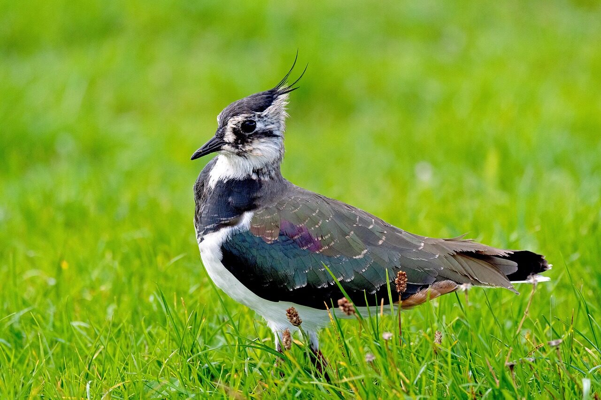
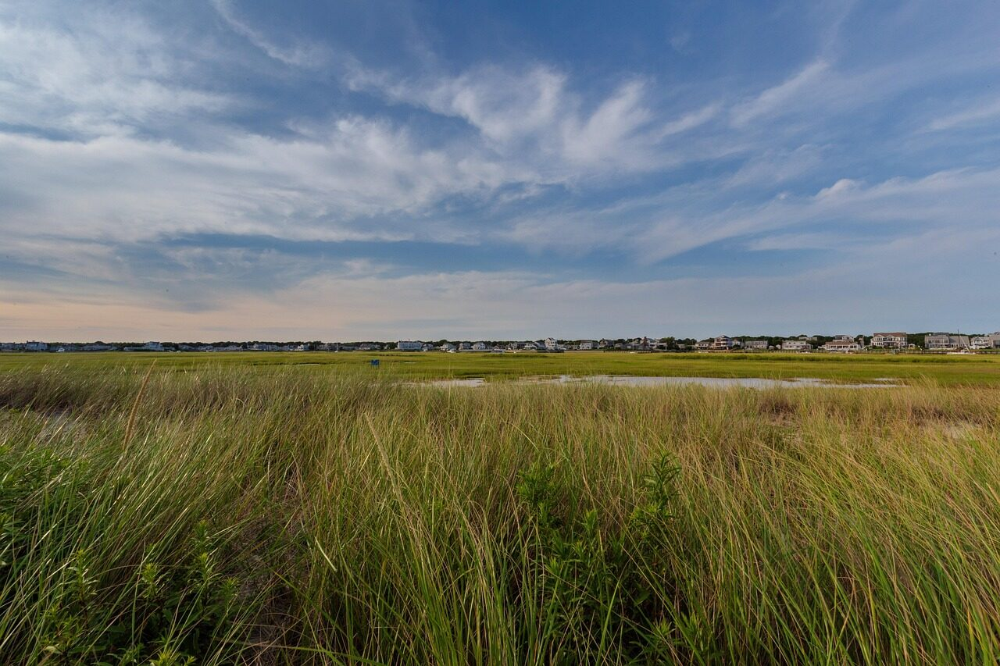
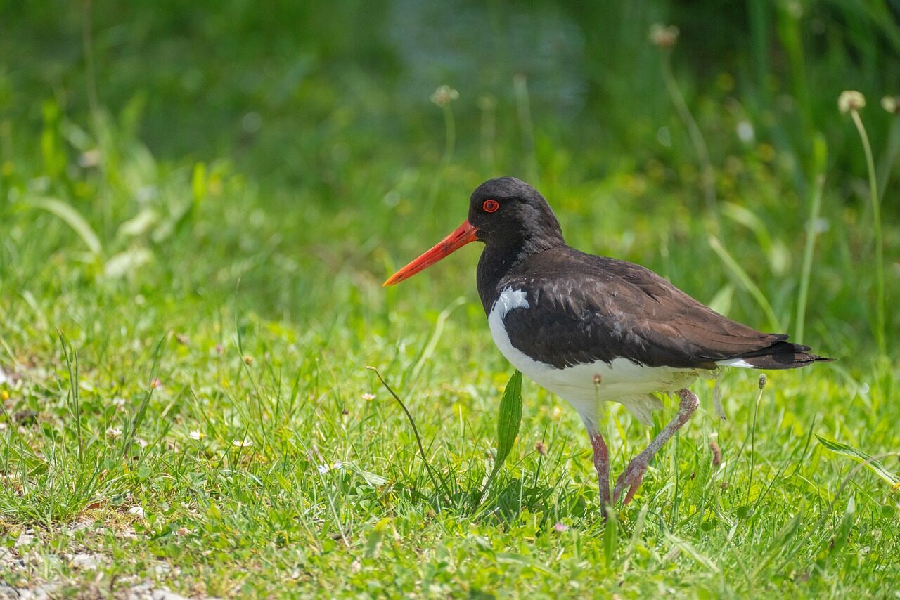
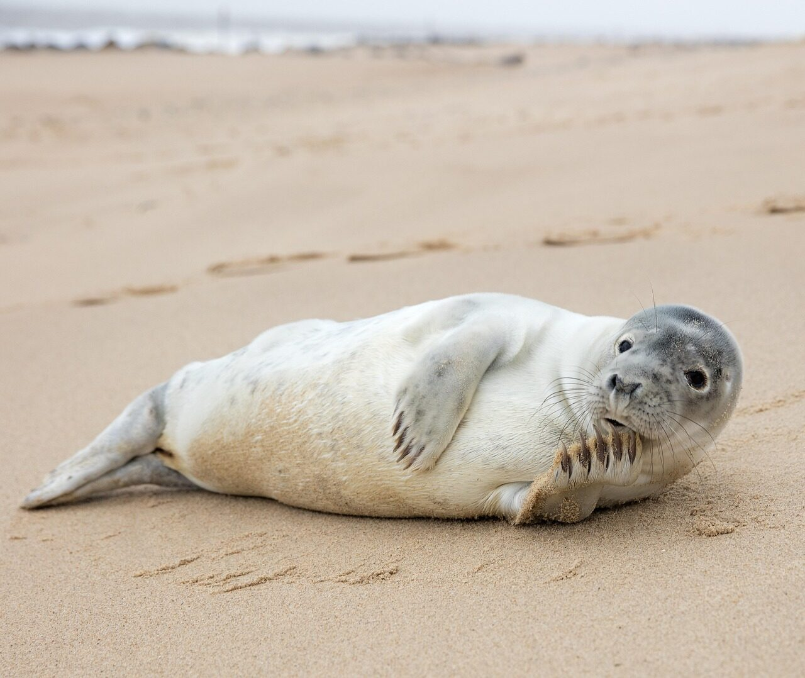
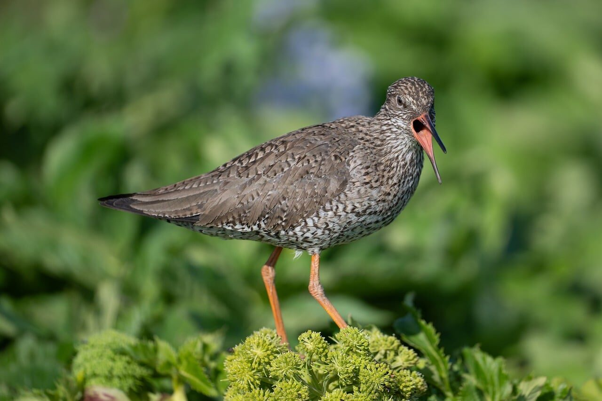
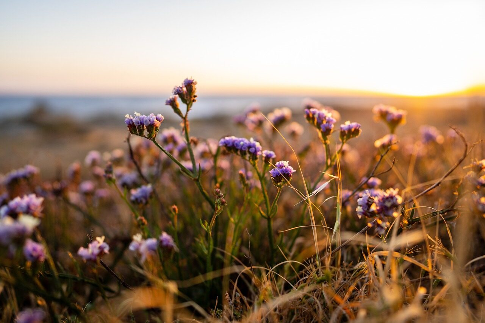
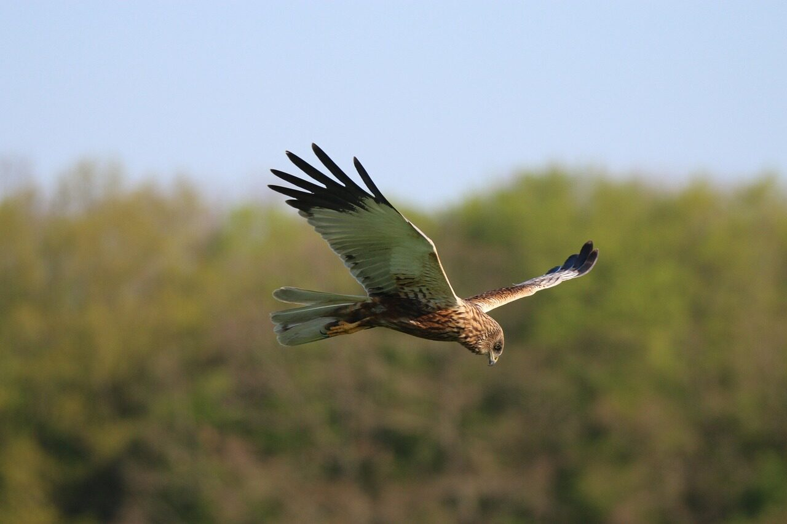
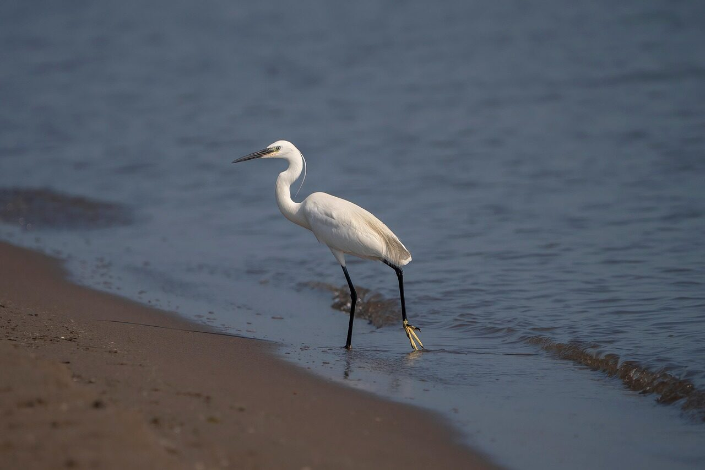
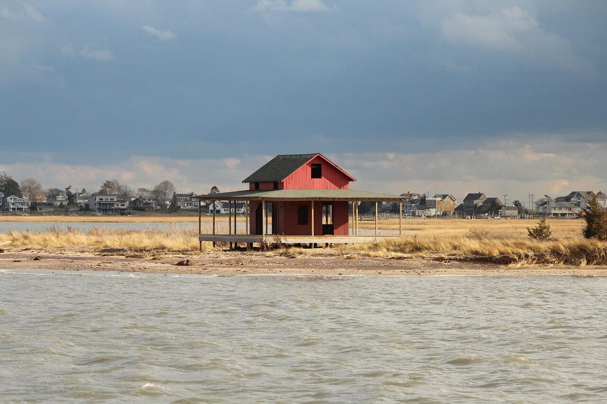
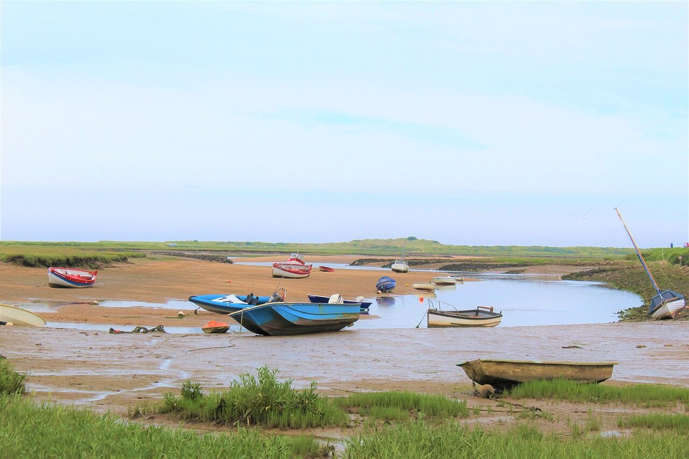

No. 12 · 20 MarThe peewits are back on the grazing marsh
Lapwings tumbling over the fields, and why the cattle matter to them.
What's about, when the tide's right, and where to stand on the north Norfolk coast. Written in a notebook in the warden's hut, then typed up for 6,800 readers.
turn the pages ↓ the birds are in them
The pink-feet have found the beet tops, the tides go big on Monday, and someone left the sluice gate open again.
They came in over the hut at ten past seven on Tuesday, wave after wave of them, low enough to hear the wingbeats under the calling. By the time the kettle boiled the first skeins were already down on the stubble behind the sea wall, and by nine the field was more goose than field. I counted in blocks of a hundred and gave up at 9,000.9,140 by Mary's count. She's better at it than me.
Pink-footed geese spend the summer in Iceland and Greenland and come here because the sugar beet harvest leaves the tops lying in the fields. They roost on the mudflats at night, safe from foxes, and fly inland at first light to feed. If you want to see it, be on the sea wall at Brinham Staithe twenty minutes before sunrise, which this week is about 07:20, and face the sea.

Out on the marsh it has been a curlew week. There is a bird that feeds in the creek below the second hide every falling tide, always alone, working the soft mud with that ridiculous bill. On Wednesday afternoon it stopped feeding, stood up straight and gave the long bubbling call, just once. Nothing answered. Then it went back to work.curlews are red-listed now. 50% fewer since 1995.
Nothing answered. Then it went back to work.
Monday brings the biggest tide of the month, 7.1 metres at 08:52, with a north-westerly behind it. The whole marsh will flood up to the sea wall, and everything that usually hides in the creeks (redshank, little egrets, the odd water rail) gets pushed out into the open. Stand at the end of the boardwalk an hour before high water and wait. Please don't walk out onto the marsh: the creeks fill from behind you faster than you can walk.tide table below ↓
And whoever left the sluice gate open on Sunday: the scrape drained by half a metre overnight, and the avocets moved on to Titchwell. Close it behind you.
Until Friday, Jem & Mary
On spring tides over 6.5 m the marsh floods and waders roost along the sea wall, close enough to count without a scope.
Two hours either side of low water the mud is open and busy. Bring a scope and stand at the end of the boardwalk.
Pink-feet leave the roost about 20 minutes before sunrise and come back at dusk. The tide doesn't matter to them.

No. 12 · 20 MarLapwings tumbling over the fields, and why the cattle matter to them.

No. 9 · 27 FebCockles, mussels and the odd worm, and how they open a shell in four seconds.

No. 46 · 13 NovWhere to watch from, and the 50-metre rule.

No. 21 · 22 MayEvery bird on the marsh listens to its alarm call. So should you.

No. 31 · 31 JulSea lavender, sea aster and the bees that come for them.

No. 17 · 24 AprThe food pass, and the year marsh harriers bred here again.

No. 38 · 18 SepIn 1990 one would have made the news. Now there are 40 on the creek.

No. 1 · 2 JanWhy we started writing this down, and what's in the kettle.

No. 26 · 26 JunThe creek empties, the boats lean over and the mud comes alive.
Grew up in the staithe, left for twenty years and came back to count birds for a living. Writes the letter on Thursday nights and swears at the tide tables.
Came for a summer survey in 2018 and stayed. Does the counts, the photographs and the ringing, and corrects Jem's numbers in the margin.
Read it every Friday on the 07:45 to Norwich. Best ten minutes of my week.
We booked our February week around your tide table. Saw the water rail!
My dad is 91 and can't get out to the marsh now. You bring it to him.
Binoculars are enough for most of what we write about. A scope helps on the mudflats at low water. We keep a spare in the hut on open days.
The sea wall path and the boardwalk are open every day, dawn to dusk. The hides close for a fortnight in March for repairs. Dogs on short leads, please.
Yes, and please do. Reply to the letter with what, how many, where and when. We check before we print, so a photo helps.
Writing and posting the letter, the almanac, and £1 of every £4 to the marsh's wardening fund, which pays for the hides, the boardwalk and the sluice we keep asking you to close.
Yes. Every letter has an unsubscribe link at the bottom, and supporters can cancel from their account in two clicks.